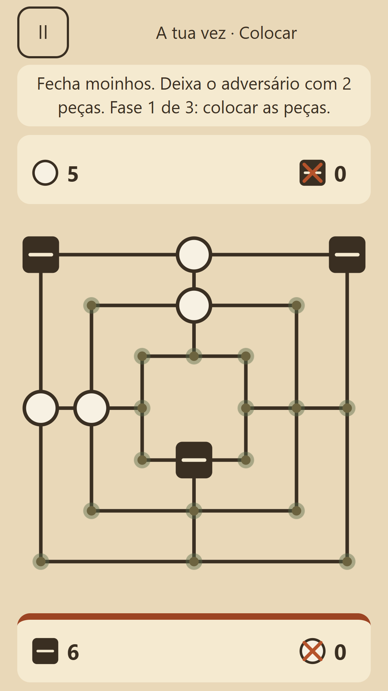
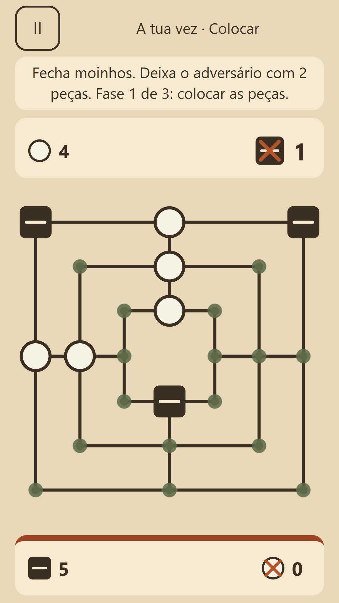
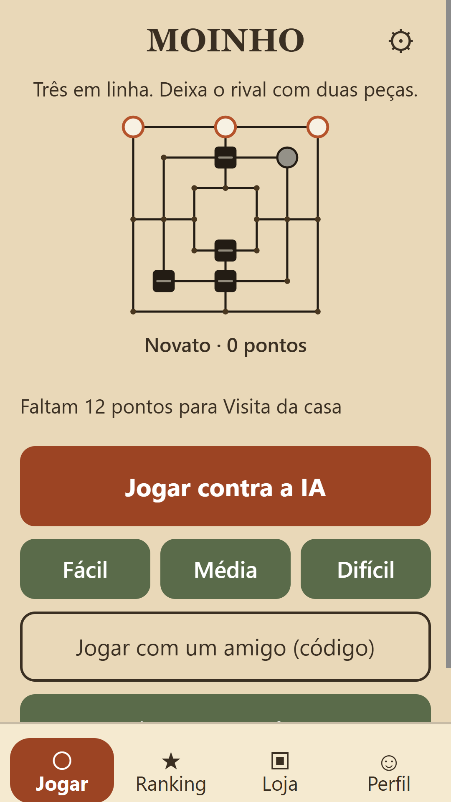
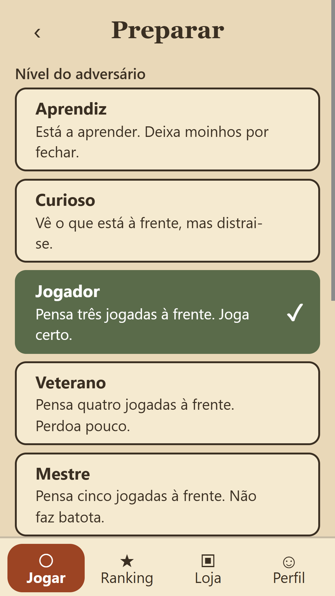
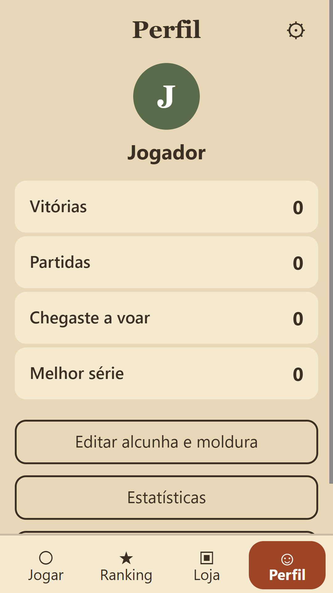

Moinho
O jogo que se joga há séculos em pedra riscada nos muros, sem pressas.
Jogar no browserAbre já, sem instalar nada. Na web não há compras nem anúncios. Em breve na Google Play.
Põe as tuas nove peças, fecha três em linha e tira uma peça ao adversário. Fica com duas, ou sem jogadas, e perdes. Com três peças, voas.
Capturas

A partida 
O moinho fechado 
Os adversários 
Os finais 
Os tabuleiros
O jogo em 3 ideias
Nove peças
Põe as tuas peças, fecha três em linha e tira uma ao adversário.
Adversários com feitio
Seis níveis, do Aprendiz ao Mestre, e quatro feitios.
Doze finais
Problemas para resolver, do «moinho em 1» a defender na hora certa.
Como se joga
- Põe as tuas nove peças, uma de cada vez.
- Fecha três em linha para tirar uma peça ao adversário.
- Fica com duas, ou sem jogadas, e perdes. Com três peças, voas.
O que tem
- Um tutorial de um minuto, jogado, que podes saltar.
- Seis níveis de adversário e quatro feitios: Ti Joaquim, Dona Olinda, Zé da Praça e A Gata.
- Doze finais e o Alquerque de doze.
- Dois jogadores no mesmo ecrã, ou por código.
- Conquistas, rank, estatísticas; tabuleiros e peças para escolher.
Sem anúncios. Sem energia, sem esperas, sem relógio. A IA joga limpo. Comprar só muda a aparência (na app Android).
Privacidade
Sem anúncios e sem rastreio. Entras com uma conta Companha, se quiseres guardar o progresso. Política de privacidade · Eliminar conta